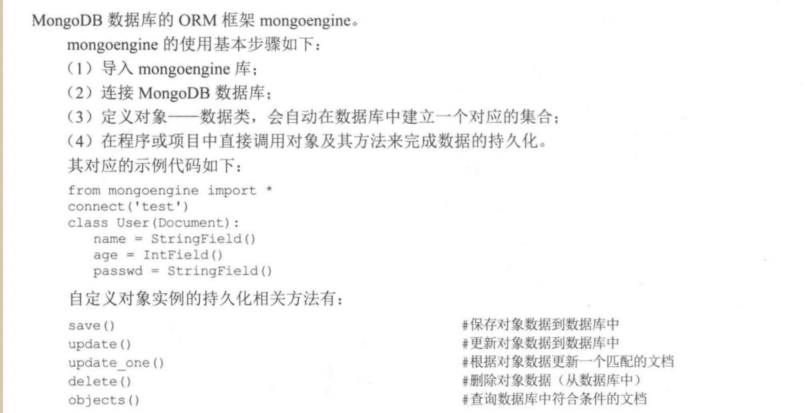

Contents
13.10. 使用ORM工具操作mongoDB数据库¶

#!/usr/bin/env python
# -*- coding:utf8 -*-
# auther; 18793
# Date：2019/6/26 10:06
# filename: 使用ORM工具操作MongoDB.py
import random
from mongoengine import * # 导入mongoengine库
connect("test") # 连接到数据库test
class Stu(Document): # 定义ORM框架类
sid = SequenceField() # 定义序号属性
name = StringField() # 定义字符串属性
passwd = StringField() # 定义字符串属性
def introduce(self):
print("序号:", self.sid, end="")
print("姓名:", self.name, end=' ')
print("密码:", self.passwd)
def set_pw(self, pw):
if pw:
self.passwd = pw
self.save()
src = "abcdefghijklmnopqrstuvwxyz"
def get_str(x, y):
""" 生成随机数，x~y之间的随机字母字符串"""
str_sum = random.randint(x, y) # 产生x,y之间一个随机整数
astr = ""
for i in range(str_sum):
astr += random.choice(src)
return astr
if __name__ == '__main__':
print("插入一个文档： ")
stu = Stu(name="hujianli", passwd="123123") # 创建一个类(对应一个文档)
stu.save() # 持久化类(保存文档)
stu = Stu.objects(name="lilei").first() # 查询出数据并初始化类
if stu:
stu.introduce() # 显示(文档)信息
print("插入多个文档")
for i in range(3): # 插入3个文档
Stu(name=get_str(2, 4), passwd=get_str(6, 8)).save()
stus = Stu.objects() # 查询所有文档
for stu in stus:
stu.introduce() # 遍历文档逐个显示
print("修改一个文档")
stu = Stu.objects("lilei").first() # 查询某个文档(自动化构建为类)
if stu:
stu.name = "aaaa" # 修改实例属性
stu.save() # 持久化入数据库
stu.set_pw("111111") # 调用类的业务方法，修改passwd
stu.introduce()
print("删除一个文档")
stu = Stu.objects(name="aaaa").first() # 查询获取一个文档
stu.delete() # 删除一个文档
stus = Stu.objects() # 查询所有文档
for stu in stus:
stu.introduce() # 变量文档并逐个显示
代码示例2：
from mongoengine import *
connect('mongoengine_test',host='localhost',port=27017)
import datetime
class Post(Document):
title = StringField(required=True, max_length=200)
content = StringField(required=True)
author = StringField(required=True, max_length=50)
published = DateTimeField(default=datetime.datetime.now)
post_1 = Post(
title='Sample Post',
content='Some engaging',
author='scott'
)
post_1.save()
print(post_1.title)
post_1.title = 'hujianli'
post_1.save()
print(post_1.title)